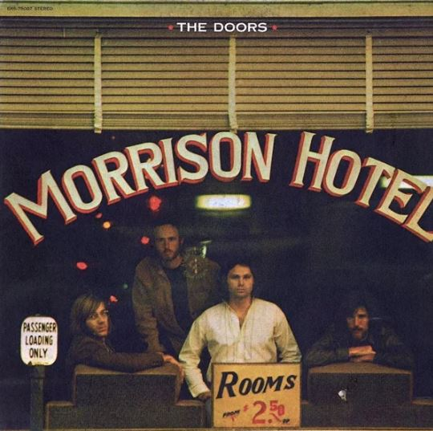
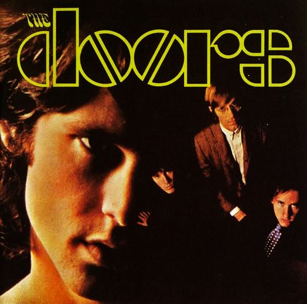

Some audio files

- "Roadhouse Blues" 4:03
- "Waiting for the Sun" 3:58
- "You Make Me Real" 2:53
- "Peace Frog" 2:51
- "Blue Sunday" 2:13
- "Ship of Fools" 3:08
- "Land Ho!" 4:10
- "The Spy" 4:17
- "Queen of the Highway" 2:47
- "Indian Summer" 2:36
- "Maggie M'Gill" 4:23

- "Break On Through" 2:29
- "Soul Kitchen" 3:35
- "The Crystal Ship" 2:34
- "Twentieth Century Fox" 2:33
- "Alabama Song (Whisky Bar)" 3:20
- "Light My Fire" 7:06
- "Back Door Man" 3:34
- "I Looked at You" 2:22
- "End of the Night" 2:52
- "Take It as It Comes" 2:23
- "The End" 11:41
Some video files
or add iframe